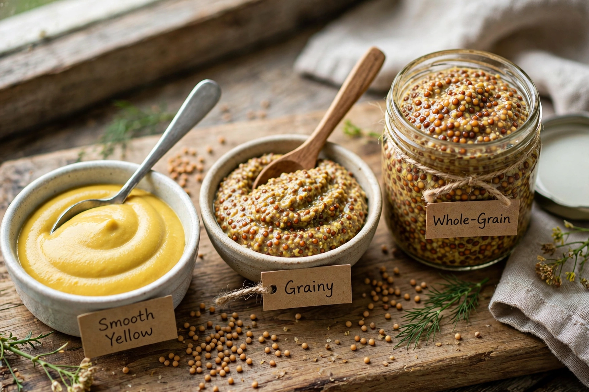

Wikipedia — the free encyclopedia

Mustard is a condiment made from the seeds of a mustard plant (white/yellow, brown, or black mustard). The seeds are ground, cracked or used whole and mixed with water, vinegar or other liquids to form a paste or sauce ranging from mild and sweet to very hot. When dry mustard powder meets water, an enzyme reaction produces the pungent compound allyl isothiocyanate; vinegar halts the reaction and fixes the heat level.
Dijon mustard (from Dijon, France) uses brown seeds and verjuice or wine; English mustard is smooth and fiercely hot; American yellow mustard is mild, coloured with turmeric, and ubiquitous on hot dogs; whole-grain and Bavarian sweet mustards serve regional cuisines. Dijon producers must still follow regulated specifications, although the seeds are now mostly imported from Canada.
Mustard seeds were used in cooking in ancient India, Egypt, Greece and Rome. Prepared mustard became a French speciality in the Middle Ages, and names like Grey-Poupon (1837) and Maille (1747) reflect that heritage.